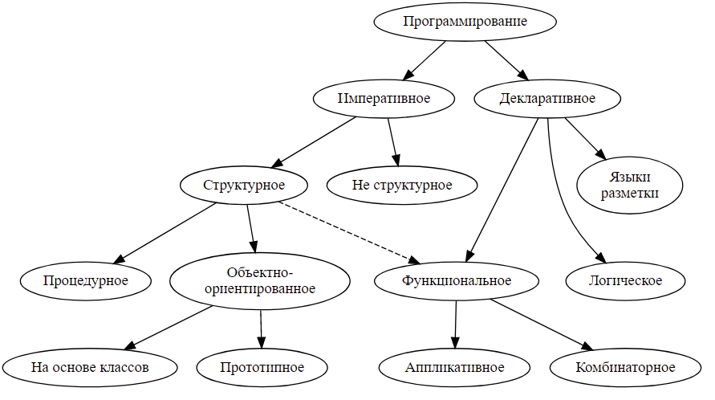

| Тема 3. Классификация языков программирования | ||||||||||||||
| Назад | ||||||||||||||
|
Языки программирования классифицируются по различным категориям, рассмотрим их основные группы. Низкоуровневые и высокоуровневые языкиМашинный код и языки ассемблера традиционно относят к языкам низкого уровня - программирование на них осуществляется либо непосредственно в машинных кодах используемого реального или виртуального процессора, либо приближено к этому. Языки программирования, которые имеют достаточный уровень абстракции - оперируют сложными структурами данных и умеют выполнять над ними комплексные операции (что в машинном коде повлекло бы длинные и сложные цепочки кода), относят к языкам высокого уровня. Примеры таких языков - C, Pascal, Python, Java и др. Трансляторы: компиляторы, интерпретаторы и гибридыКак и в случае с языками ассемблера, любой язык программирования должен пройти процесс перевода на машинный код для того, чтобы компьютер понял какие инструкции ему дают в рамках того, что он умеет. Программа, предназначенная для перевода кода с языка программирования в машинный код называется транслятором. На сегодняшний день выделяется 3 типа трансляторов: компиляторы, интерпретаторы и гибриды.
Практически все современные языки относительно «размывают» границы данной классификации и в той или иной степени являются гибридными.
Существует множество критериев, по которым можно классифицировать языки программирования. Частые варианты классификации включают:
Чёткой классификации не существует, по той простой причине, что существуют буквально тысячи ЯП, и в любой категории классификации обнаруживается практически непрерывный спектр. По системе типовНаиболее категоричное разделение ЯП по системе типов на типизированные и нетипизированные.
С точки зрения теории типов очень немногие из современных языков являются типизированными в полном смысле этого слова. Большинство являются типизированными в некоторой мере. Так, многие языки позволяют выходить за пределы системы типов, принося типобезопасность в жертву более точному управлению исполнением программы.
Типизированные языки, в свою очередь, могут классифицироваться по моменту проверки типов и по строгости этой проверки. По моменту проверки типов ЯП делятся на статически и динамически типизированные (или просто, статические и динамические).
Надо заметить, что многие явно типизированные языки умеют
выводить типы в некоторых случаях
(например,
По строгости типизации языки делятся на сильно и слабо типизированные.
В целом, чёткую грань провести оказывается опять-таки достаточно
сложно, поскольку неявное преобразование типов в той или иной
мере производится в большинстве языков. Однозначно к слабо
типизированным относят Perl, JavaScript и C (в силу свободной
конверсии По уровню абстракцииКлассификация по уровню абстракции сильно зависит от современных представлений о “высоком уровне абстракции”. Языки по-настоящему низкого уровня – это машинный код и языки ассемблера, все остальные – в некотором смысле языки высокого уровня. Тем не менее, многие сейчас считают C и C++ языками низкого уровня. Java, Python, Ruby и т.п. сейчас общепринято считаются языками высокого уровня. Языки высокого уровня могут значительно упрощать реализацию сложных алгоритмов, однако, написанные на них программы потенциально менее производительны (абстракция не бесплатна). По модели исполненияЯП может быть компилируемым, транс-компилируемым или интерпретируемым. Интерпретируемые языки исполняются непосредственно, без этапа компиляции. Программа, называемая интерпретатором, читает каждое выражение, определяет сообразное действие, и совершает его. Гибридный вариант может генерировать машинный код “на лету” и исполнять его. Интерпретируемые языки: PHP, Perl, Bash, Python, JavaScript Компилируемый язык компилируется, т.е. переводится в исполнимую форму до выполнения. Компиляция может производиться непосредственно в машинный код, или в какое-либо промежуточное представление (байт-код), которое потом интерпретируется виртуальной машиной. Компилируемые языки (машинный код): С, С++, Algol, Fortran, Haskell Компилируемые языки (байт-код): Python, Java Транс-компилируемые языки – это языки, которые для компиляции или выполнения транслируются в другой язык. Частой целью для транс-компилируемых языков является C. Также последнее время популярной целью является JavaScript (как единственный язык, исполняемый в браузере). Транс-компилируемые языки: C++ (исторически, в C), Haskell (исторически, в С), Fortran (иногда, в С), Fay (в JavaScript) Линии сильно размыты, поскольку существуют компиляторы для традиционно интерпретируемых языков, и, напротив, интерпретаторы для традиционно компилируемых. Классификация по “поколению”Поколение – несколько условная характеристика, которая в значительной мере связана с историей появления современных языков программирования.
Парадигмы программирования
 ОпределениеВообще строгого определения нет, но по сути “парадигма программирования” определяет стиль написания исходного кода программ. В некоторой степени “стиль” диктует так же способ формализации алгоритмов. Императивное программированиеИмперативное программирование характеризуется в основном:
При императивном подходе к составлению кода (в отличие от функционального подхода, относящегося к декларативной парадигме) широко используется присваивание. Наличие операторов присваивания увеличивает сложность модели вычислений и делает императивные программы подверженными специфическим ошибкам, не встречающимся при функциональном подходе. Практически всё аппаратное обеспечение в основе своей императивное. Неструктурное программированиеХарактерно для наиболее ранних языков программирования. В основном характеризуется:
Характерной особенностью неструктурного программирования является сложность реализации рекурсии. Структурное программированиеВ отличие от неструктурного программирования, характеризуется:
Концепция структурного программирования основана на теореме Бёма-Якопини:
Последовательность – это выполнение сначала одной подпрограммы, затем другой. Ветвление – это выполнение либо одной, либо другой подпрограммы в зависимости от значения некого булева (логического) выражения. Итерация – это многократное выполнение подпрограммы пока некое булево выражение истинно. Процедурное программированиеПроцедурное программирование можно рассматривать как небольшую вариацию на тему структурного программирования, основанную на концепции вызова процедуры. Основная идея заключается в том, чтобы сделать подпрограммы более модульными за счёт:
Оба этих пункта реализуются за счёт использования стека вызовов. Объектно-ориентированное программированиеОбъектно-ориентированное программирование основано на концепции “объекта”. Объекты могут содержать данные (поля, свойства, аттрибуты) и поведение (код, процедуры, методы). Наиболее популярной формой ООП является ООП на основе классов. В данном подходе, все объекты являются экземплярами классов, и классы определяют так же тип объектов. Одной из альтернатив является прототипное наследование. Прототипное наследование не использует классов. Вместо этого, одни объекты могут быть объявлены “прототипами” других объектов – при этом методы и поля прототипа становятся доступны как методы и поля нового объекта (если, конечно, новый объект их не переопределяет) Декларативное программированиеДекларативное программирование — это парадигма программирования, в которой задаётся спецификация решения задачи, то есть описывается, что представляет собой проблема и ожидаемый результат. Противоположностью декларативного является императивное программирование, описывающее на том или ином уровне детализации, как решить задачу и представить результат. Как следствие, декларативные программы не используют понятия состояния, то есть не содержат переменных и операторов присваивания. К подвидам декларативного программирования также зачастую относят функциональное и логическое программирование — несмотря на то, что программы на таких языках нередко содержат алгоритмические составляющие. “Чисто декларативные” компьютерные языки зачастую не полны по Тьюрингу — примерами служат SQL и HTML — так как теоретически не всегда возможно порождение исполняемого кода по декларативному описанию. Это иногда приводит к спорам о корректности термина “декларативное программирование”. Функциональное программированиеОсновные концепции:
Основано на лямбда-исчислении АппликативноеАппликативное программирование — один из видов декларативного программирования, в котором написание программы состоит в систематическом осуществлении применения одного объекта к другому. Результатом такого применения вновь является объект, который может участвовать в применениях как в роли функции, так и в роли аргумента и так далее. Это делает запись программы математически ясной. Тот факт, что функция обозначается выражением, свидетельствует о возможности использования значений-функций — функциональных объектов — на равных правах с прочими объектами, которые можно передавать как аргументы, либо возвращать как результат вычисления других функций. КомбинаторноеКомбинаторное программирование (англ. function-level programming) — парадигма программирования, использующая принципы комбинаторной логики. Является особой разновидностью функционального программирования, но, в отличие от основного его направления, комбинаторное программирование не использует λ-абстракцию. На практике это выливается в отсутствие “переменных”, содержащих данные. Логическое программированиеЛогическое программирование — парадигма программирования, основанная на автоматическом доказательстве теорем, а также раздел дискретной математики, изучающий принципы логического вывода информации на основе заданных фактов и правил вывода. Логическое программирование основано на теории и аппарате математической логики с использованием математических принципов резолюций. Самым известным языком логического программирования является Prolog.
|
||||||||||||||
| Конспект подготовлен Бакулиным А. М. 2022 год. | ||||||||||||||